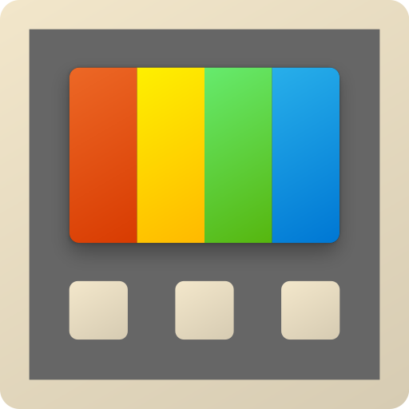
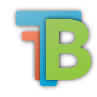
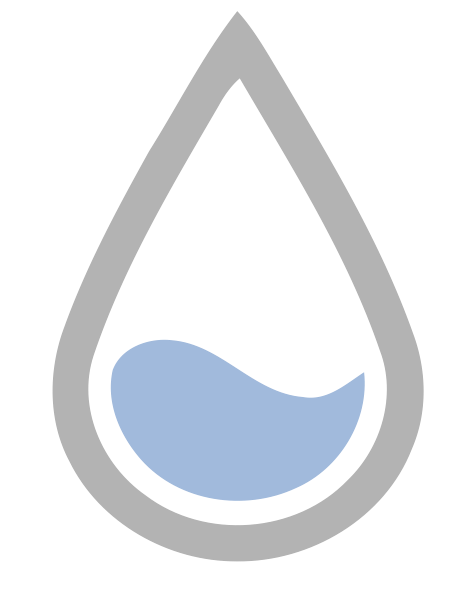
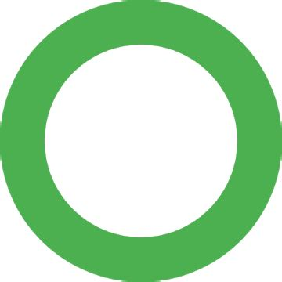
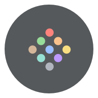

Personaliseren
Dit zijn tips om hoe je je OS kan personaliseren.
PowerToys
PowerToys is gemaakt door Microsoft en is bedoelt om meer functies te geven voor Windows. Het staat ook op de Microsoft Store.
Lively Wallpaper
Lively Wallpaper is net als Wallpaper Engine een programma om een bewegende achtergrond te krijgen. Het heeft een paar standaard achtergronden, maar je kan zelf ook gifjes of videos toevoegen. Pas wel op, dit kan impact hebben op je performance want het gebruikt je gpu en cpu (zelfde geld voor wallpaper engine). Dat is ook de reden waarom ik het niet gebruik.
TranslucentTB
TranslucentTB (ook wel TranslucentTaskBar) is, zoals de naam al zegt, een manier hoe je je taskbar doorzichtig kan maken.
Rainmeter
Met rainmeter kan je je desktop helemaal veranderen van hoe jij wilt. Je krijgt meer vrijheid en keuzes. Lijkt een beetje op linux (kde plasma). Net als lively wallpaper gebruikt dit ook je gpu en cpu.
KISS Launcher
KISS Launcher is een launcher voor android. KISS staat voor "Keep it Simple, Stupid". Een launcher is iets waarmee je je android telefoon er anders uit kan laten zien. Het is FOSS en licht en werkt erg goed. Misschien moet je het wel een beetje aanpassen of eraan wennen. Ik gebruik het nu 2 dagen voor mijn telefoon en het is prettig te gebruiken. KISS Launcher staat op F-Droid.
Delta
Delta is een icon pack voor Android. Kan worden gebruikt met KISS Launcher en het staat op F-Droid. Delta heeft ook achtergronden.
